行程名稱：97.11單車台南小吃之旅：
目的：對一個城市小吃的熱情，是偉大國民的責任（引用單車達人莊恆甫）
路程：來回約100公里
參加人員：進哥父子、紀老大、崑哥、貓哥、阿龍哥、小揚、小超
美食團成員出發前在河東獅總部前合夥
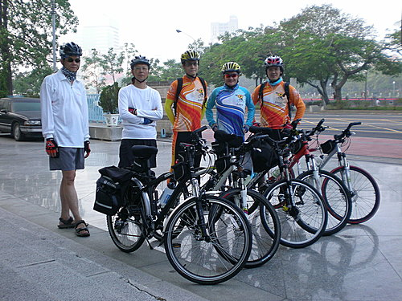
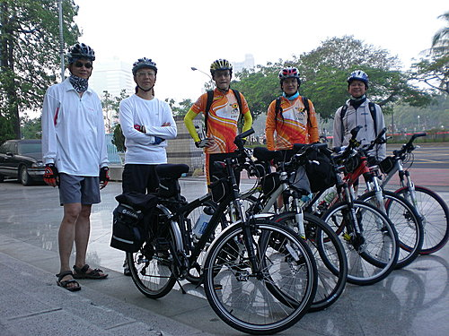
美食團成員沿著愛河出發，前往台十七線直奔台南 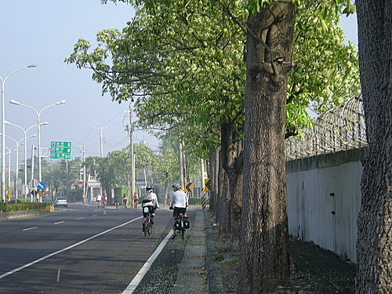
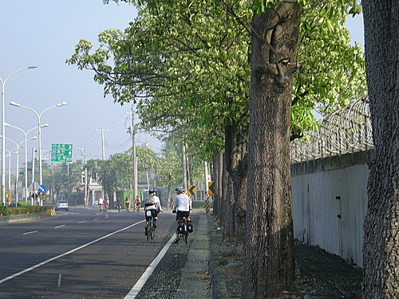
中途經過茄萣情人碼頭，因為大夥肚子都很饑，所以幾乎沒有停留，繼續往台南直奔
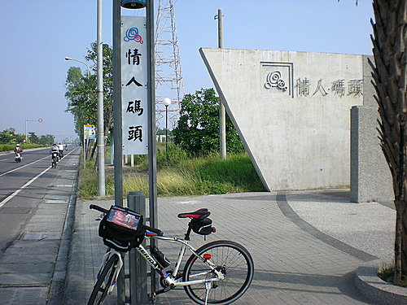
終於到達第一站，進哥強力推薦的牛雜湯，真可惜我不吃牛肉，但肚子很饑，還是要了碗清湯喝
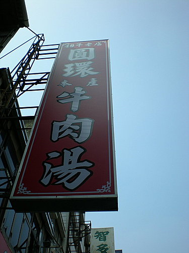
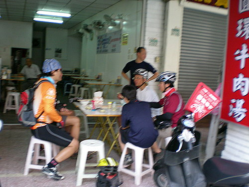
第二站福記肉圓--位置就在孔廟對面，吃完後，大夥都覺得站著吃比坐著吃還好吃，而且免費附贈的清湯比肉圓還好吃！
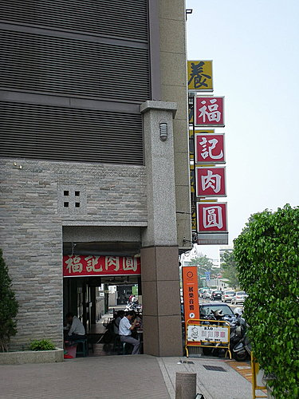
來到第三站，莉莉冰果店，就在福記肉圓旁邊，創立於一九四七年，這可是超過六十年的老店
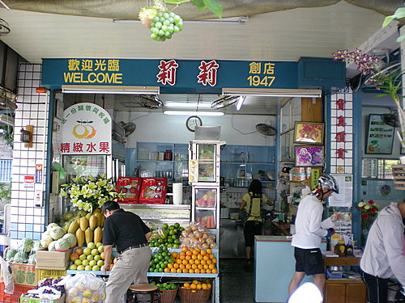
第四站白腹魚羹，地點就在赤崁樓旁邊，據老饕進哥告知，這裡面白腹魚的成份少的可憐，但我覺得吃起來還不錯吃！
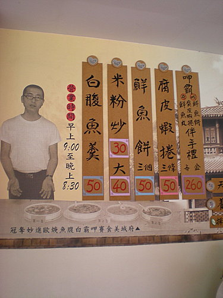
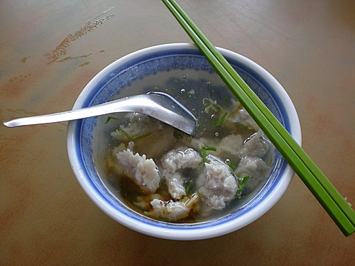
第五站億豐冬瓜茶─也在赤崁樓旁邊，這裡的冬瓜茶喝起來好像比分店的還好喝
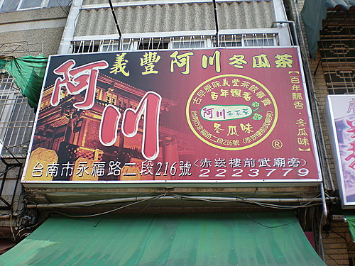
買杯冬瓜茶都要大排長龍 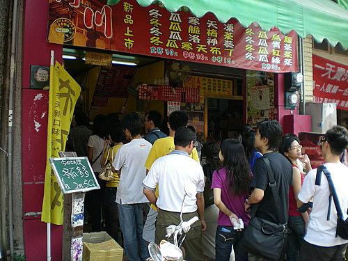
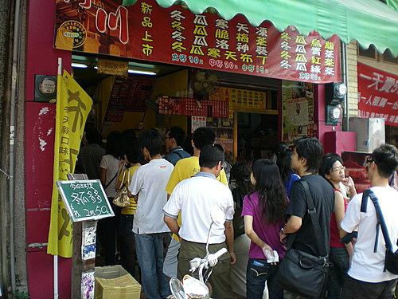
你看小揚喝冬瓜茶滿意的表情，就會覺得排隊排得值得！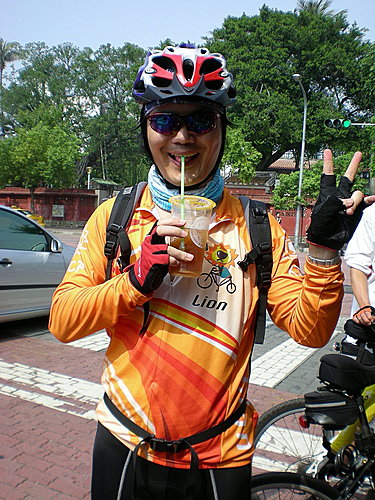
第六站魚丸湯，這可是六十年老店
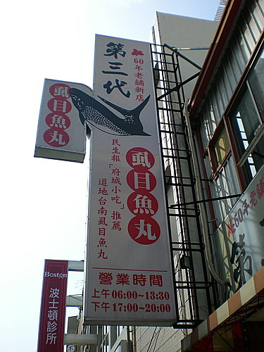
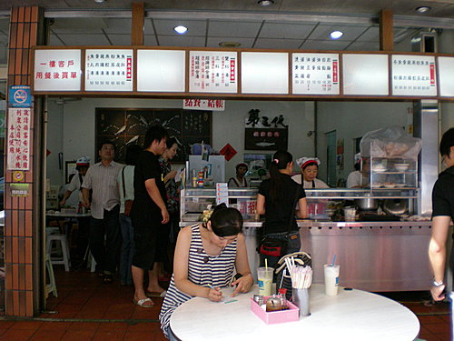
第七站蜜桃冰，據紀老大陳述，這裡充滿兒時的回憶！
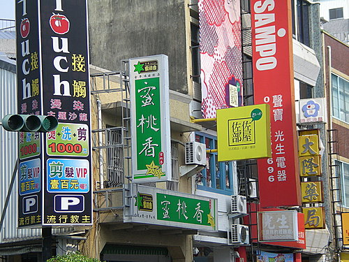
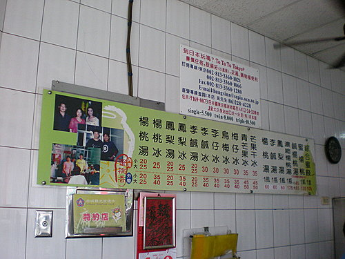
紀老大比食指，表示吃第一碗，崑哥比「二」表示已經吃了第二碗，真是戰鬥力驚人！
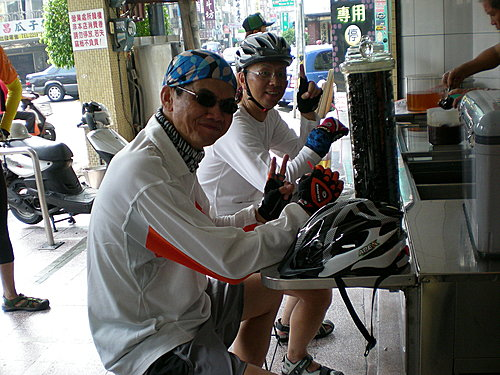
第八站杏仁豆腐冰，就在五妃廟對面
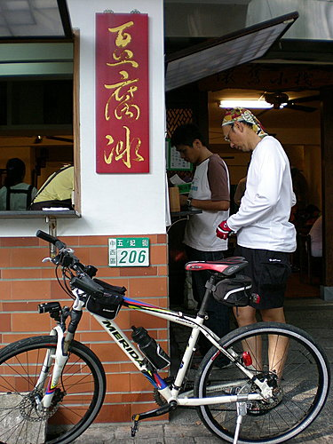
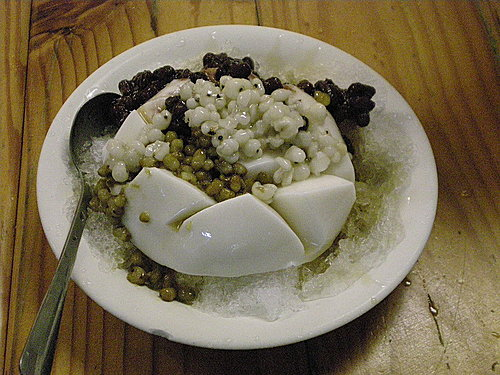
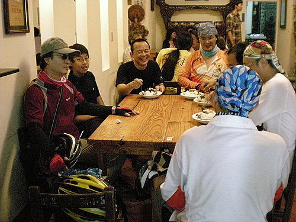
第九站松村買滷味，回去孝敬太座及小孩
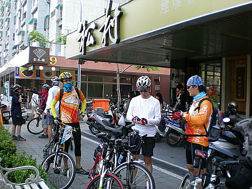
回程在台南市與高雄縣交界處合影
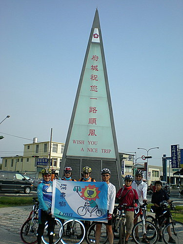
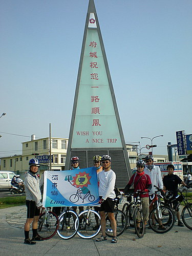
後記：感謝紀老大安排的台南小吃之旅，紀老大為了安排本次行程，先隻身騎乘百里前往台南探勘，並力邀台南通進哥擔任嚮導，促成了這次好吃又好玩的行程。原本預定完成十家小吃店，最後完成九家，完成度百分之九十，應無不實廣告之嫌吧！
往後有要河東獅音樂社的配合,本社絕對會全力以赴. 謝謝指教. ----副社長jack----
超哥:關於環島資訊我大概可以幾點建議及注意事項1.如果你地環島要認證.http://www.bikelane.org.tw/bikelane/cycle_rule.htm要注意及計劃資料之收集.....2.車隊中至少要有人會單車地故障排除...3.你騎環島地時間月份算不錯太陽不大.但還是要注意防曬.及盡量不要靠海邊騎.否責遇上逆風.可能會讓你地時間難控制. 4.關於環島是整天幾乎都坐在單車座墊上.如果你們車隊中還有人會因坐久會痛屁股地話.那就要找人來教如何.騎單車及坐姿之調整.及坐墊之角度.高度.否則.如果你騎義一天就痛屁股地話.那再下來幾天.屁股一定破皮.5.如果要旅遊之地點盡量以東部為主.再來......先讓我再想想....過兩天再貼...你也可以提問題....再回復...ok
今天有收到超哥來來信告知,感謝分享各位車友的戰績,願超哥不時的提供資訊讓我們隔壁的這一方也能知道資訊,盡量與您參予 以下我還做了一些部落格請鑑賞 河東獅音樂社 http://blog.xuite.net/kaodico/kaodico 我自己的影音 http://blog.xuite.net/e5167/bv7hi 我的部落格 http://tw.myblog.yahoo.com/bv7-hi 最近再忙這一些及公事及一些小孩的事忙翻了 ^.^~
我會以MAIL將車隊的訊息通知您，也竭誠歡迎參加車隊的活動。另感謝河東獅音樂社對澄清湖健行活動的大力支持。祝 新年快樂！
小超